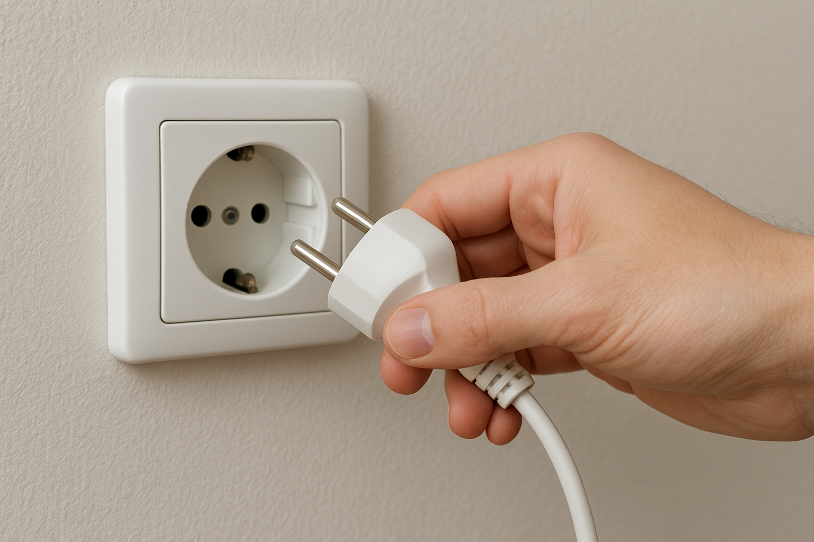
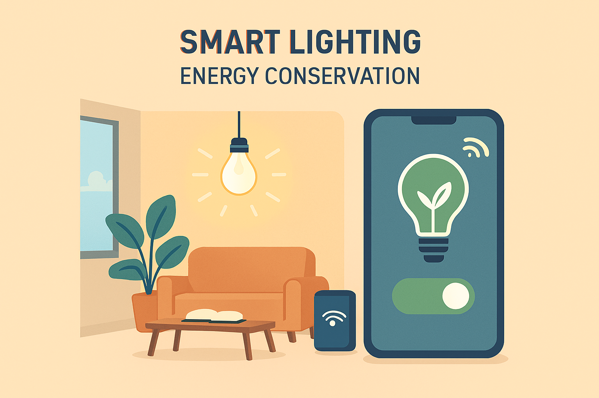

Wonen in een huurwoning kan soms best prijzig zijn, vooral als de energierekening flink oploopt. Gelukkig zijn er genoeg simpele, goedkope manieren om energie te besparen. Met een paar slimme aanpassingen kun je geld besparen én groener leven, zonder grote klussen of hoge investeringen.
Energie besparen
Slim omgaan met apparaten
Veel energie gaat verloren door apparaten die stand-by staan of onnodig aanstaan. Zet tv, computer en keukenapparatuur helemaal uit als je ze niet gebruikt. Een stekkerdoos met schakelaar kan hierbij helpen.
Apparaten zoals wasmachines en vaatwassers verbruiken minder energie wanneer je ze volledig vol laat draaien. Kies voor eco-standen als dat mogelijk is.

Verwarming en isolatie
Verwarming is vaak de grootste energiefactor in een woning. Zelfs een graadje lager kan merkbaar schelen op je rekening. Combineer dat met het slim gebruik van thermostaten en radiatoren: laat de verwarming ’s nachts of als je weg bent een paar graden zakken.
Isolatie hoeft niet ingewikkeld te zijn. Tochtstrips bij ramen en deuren voorkomen dat warme lucht ontsnapt, radiatorfolie achter radiatoren weerkaatst warmte terug de kamer in. In sommige huurwoningen kun je zelfs overleggen met de verhuurder over extra isolatie of HR++ glas.
Slimme verlichting

Slimme verlichting
Vervang oude gloeilampen door LED-lampen. Ze verbruiken minder stroom en gaan veel langer mee. Gebruik dimmers of bewegingssensoren waar mogelijk.
Vergeet ook niet natuurlijk licht te benutten: overdag zijn lampen vaak niet nodig.
Gebruik van slimme meters en apps
Slimme meters zijn tegenwoordig in bijna elke woning te vinden en geven realtime inzicht in je verbruik. Door regelmatig te checken wat je gebruikt, zie je direct waar je energie kunt besparen.
Er zijn ook apps die je helpen je verbruik bij te houden en vergelijken met gemiddelde huishoudens. Zo weet je welke apparaten het meeste energie verbruiken en kun je gerichte keuzes maken. Soms biedt je energieleverancier tips op maat aan via hun app of portal, wat extra inzicht kan geven.
Gedragsveranderingen
Gedragsveranderingen en kleine gewoontes
Energie besparen is niet alleen een kwestie van apparaten en isolatie, maar ook van dagelijkse gewoontes. Korter douchen en de kraan dichtdraaien bij tandenpoetsen helpen al veel.
Kledingkeuzes spelen ook een rol: draag een trui in plaats van de verwarming hoger te zetten.
Handige tips op een rij
- Apparaten volledig uitschakelen en niet op stand-by laten staan.
- Gebruik stekkerdozen met schakelaar.
- Wasmachines en vaatwassers alleen draaien als ze vol zijn.
- Verwarming ’s nachts of bij afwezigheid een paar graden lager zetten.
- Tochtstrips en radiatorfolie gebruiken.
- LED-lampen installeren en natuurlijke verlichting benutten.
- Slimme meters en energie-apps gebruiken voor inzicht.
- Korter douchen en bewust omgaan met kraanwater.